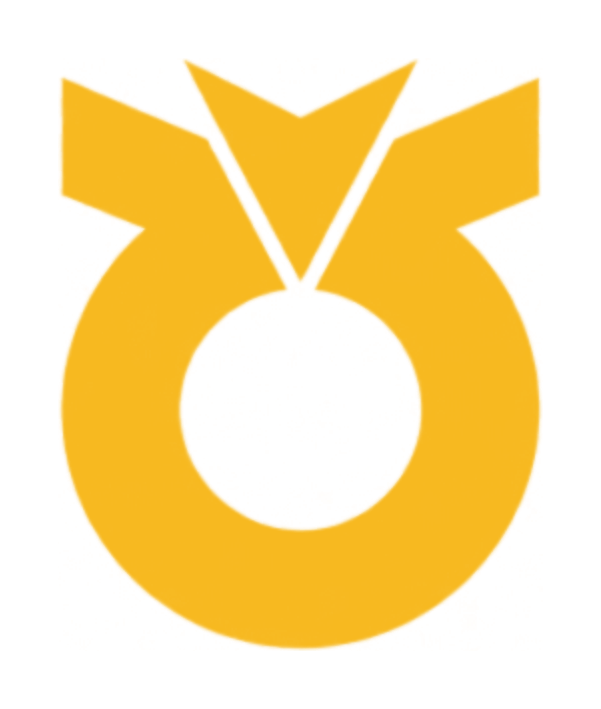
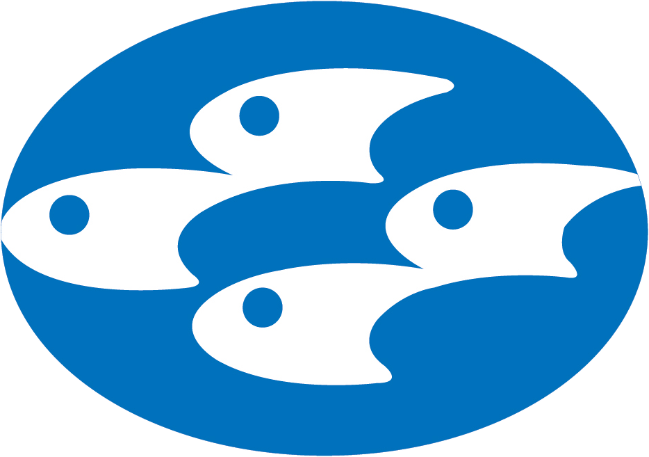
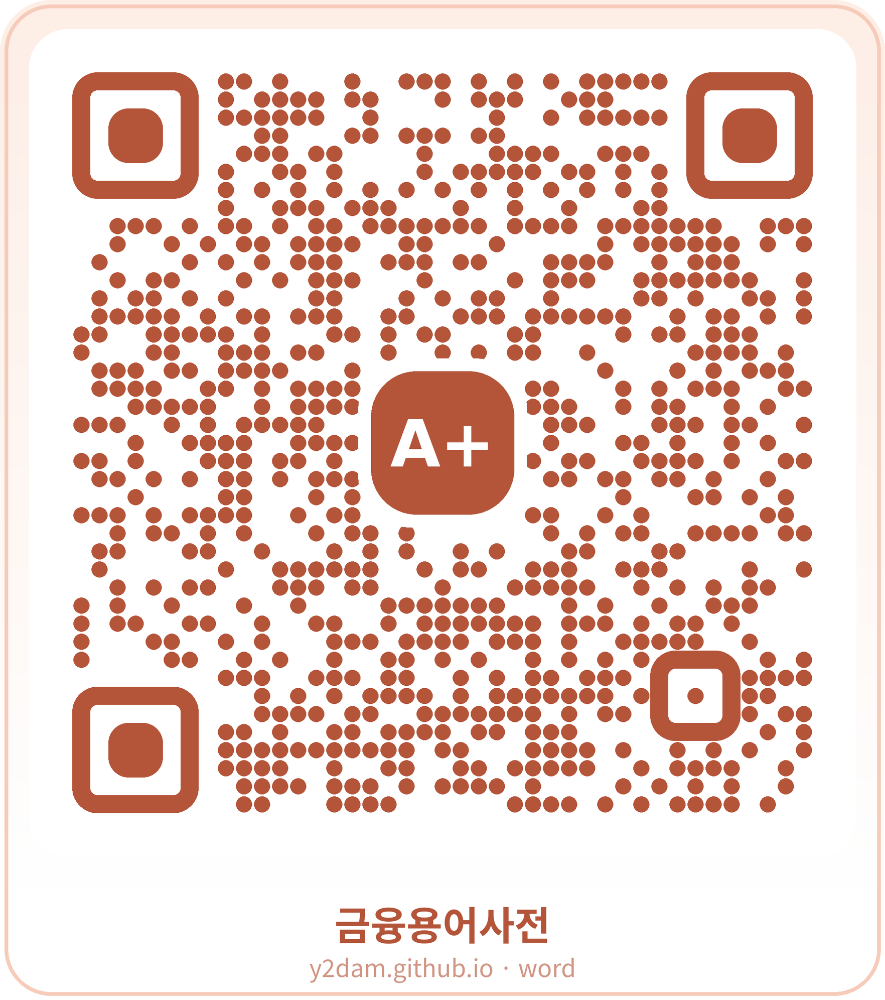
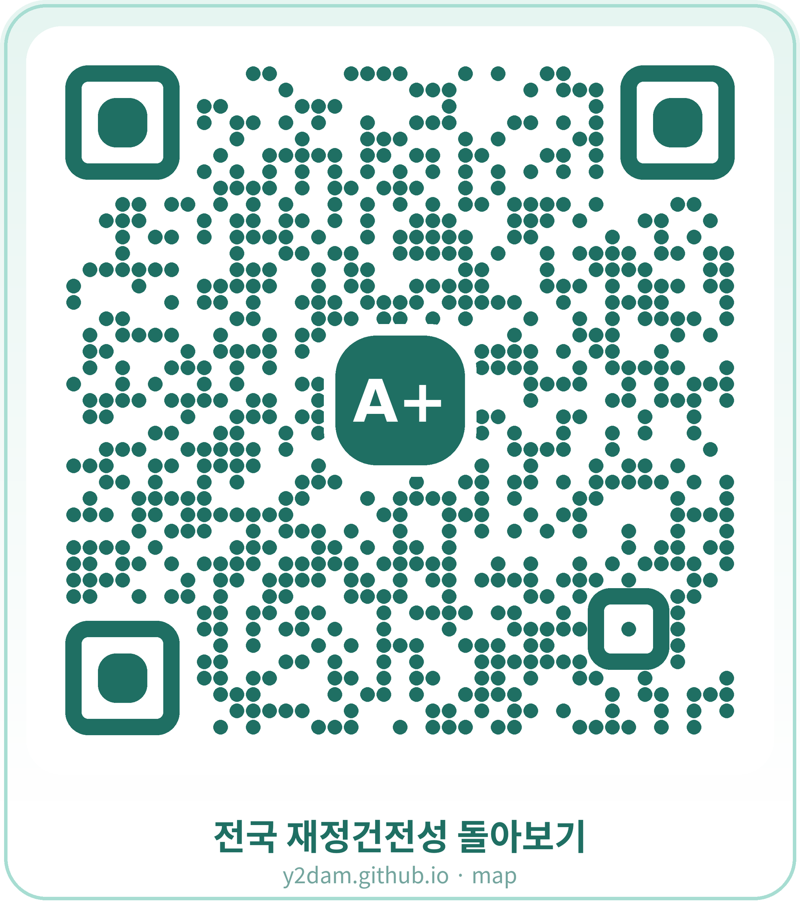

상호금융 재무건전성 탐사보도 · DSJA TeamA+
당신의 통장은
안녕하십니까
열리지 않는 공시와 상호금융조합 재무제표
설문조사 응답자 95%... 금융 관련 용어 어려워
농축협·신협·새마을금고·수협·산림조합의 재무건전성 정보를 한데 모아 분석


↓
목차
숫자는 공개돼 있다.
그런데 위험은
보이지 않는다.
공개 지표의 한계
연체율 · 순자본비율 · 대손충당금 적립률. 모두 공시 대상. 다만 숫자 공개가 곧 위험 파악을 의미하지는 않음.
상호금융조합, 기관마다 공시 형식과 지표 제각각
— 비교 자체가 어려움.
이번 조사
5개 업권의 재무건전성 정보를 한데 모아 직접 비교했음.
01
공시는 했다,
그런데 볼 수가 없다
대부분 조합, 반기마다 재무제표를 PDF로 공시.
올려놓은 것과 실제로 열어볼 수 있는 것은 다른 문제.
같은 이름의 '공시 파일', 결과는 정반대.
재무상태표.pdf
열람 가능 (자산 · 부채 · 순자본비율 확인 가능)
재무상태표.pdf
열람 불가 (Fasoo로 암호화됨)
농협 결산 공시(경영실태평가 등급 포함) —
예금자가 볼 수 있는 창구는 농협 홈페이지가 사실상 유일.
02 — 파일은 있다, 읽을 수만 없을 뿐
2018~2026년 지역농협 경영공시 {{ stat13140 }}건 전수 분석 결과, {{ stat3023 }}%에서 신용 재무상태표 확인 불가. 수협도 1,538건 중 15건(0.98%) 열람 불가.
파일 부재가 아님. 파일은 존재. 다만 읽기 불가.
02 — 판정 기준
어떻게 못 읽는다고
판단했나
- 농협 사이트의 '농·축협 경영공시'에서 2018~2026년 전국 농·축협 공시자료를 전수 수집
- 연도·페이지별로 목록을 자동 조회하고, 첨부 ZIP 파일을 다운로드해 PDF만 추출·저장
- 156개 지역본부의 정기·상반기 결산 공시 13,140건 확보
열기 전에 걸러냄
파일을 열기 전 헤더 바이트를 확인해 DRM·파일 손상·파일 부재 등 사람이 열어도 확인하기 어려운 파일을 1차 판별
※ 파일 첫 300바이트만 읽어서 판정. DRM 암호화 파일은 직접 사이트에서 파일을 눌러 확인
실제로 열어서 확인
정상적으로 열리는 파일을 대상으로 텍스트 추출량을 측정,
100자 미만이면 스캔 이미지 파일로 판정
수천 자
정상 문서
0자
스캔본 (그림 한 장)
※ pypdf로 텍스트 추출 시도. 숫자와 재무정보는 눈으로 확인 가능하지만 기계는 텍스트로 인식하지 못하는 경우로 확인
02 — 수협 91개 조합, 제각각의 홈페이지
수협은,
조합마다 사이트가 달랐다
자동 판별 로직
조합 홈페이지가 쓰는 게시판 CMS를 URL 패턴으로 자동 판별해 정기 경영공시 본 파일만 골라 저장. 요약공시·감사보고서·수시공시 등은 제외.
세 유형에 맞지 않는 조합(부산시수협·인천수협 등)은 사람이 직접 확인. 건너뛰지 않음.
DRM DETECTOR
파일 첫 80바이트만 읽어 시그니처로 DRM 여부를 판정, 파일을 통째로 열 필요가 없어 전체 스캔이 빠르다.
{{ stat86 }}/91곳
완료 (95%)
{{ stat1538 }}건
확보
파일
{{ statSh15 }}건
DRM 판정
첫 80바이트로 판정. 벤더 2종
Fasoo(농협과 동일) + DRMONE(수협에서 새로 발견)
DRM 상태로 공시한 지역농협에 취재팀이 직접 전화해 해명 요구. 익명을 요청한 담당자 10명 전원, 열람 불가 상태였는지 몰랐다고 답변, 담당자 실수로 해명.
EXTREME CASE · A농협의 답변
수정 계획을 묻자, 지금 수정하면 업로드일이 바뀐다는 답변.
지금까지의 공시불이행은 '파일 미게시'. 이번엔 다름 — 게시 기록은 있으나 실질적 접근은 불가능. 형식적 이행과 실질적 공개, 그 사이의 간극.
내려받아도 열리지 않는 재무제표가,
8년째 '공시'되고 있다.
03 — 숫자보다 먼저, 용어부터 막힌다
재무제표,
일반인에게 가혹한 숫자 나열
대부분 한자어 전문용어. 한 글자씩 뜻을 알아도 조합되면 전혀 다른 의미.
'여신' = 대출, 그럼 '고정이하여신'은?
마우스를 올리면 쉬운 뜻 표시.
금감원 금융용어사전 존재. 다만 공시를 보는 순간 바로 찾아볼 수 있는 구조는 아님
03 — 쉬운 금융 용어 사전
그래서, 사전을 만들었다
공시에 쓰이는 한자어 전문용어 617개를 쉬운 말로 옮김.

직접 확인해보세요
용어 617개 수록
단어가 낯설수록,
숫자도 함께 가려진다
금융 용어 설문조사 문항별 정답률 · 100명 중 맞힌 사람 수
82명 설문, 평균 100점 만점에 46.6점. 80점 이상 8.5%, 10~30점대도 22.0%.
응답자 95% 이상, "쉬운 말로 바뀌면 좋겠다" 응답.
{{ q.rateText }}
{{ q.label }}
04 — 등급은 있다, 기준은 없다
등급은 있다,
기준은 없다
금융당국,
경영 상태를 1~5등급으로 종합 평가.
1등급
우수
2등급
양호
3등급
보통
4등급
취약
5등급
위험
그런데 등급 산정 기준은 「상호금융업감독업무시행세칙」에 따라 비공개.
새마을금고만 등급 구간표 공개, 나머지는 비공개. 모든 기관에 동일 기준 적용도 불가능
— 조합원 성격과 수익성 수준 차이로 오분류 위험 증가.
05 — 내 조합은 지금 어떤 상태일까
내가 거래하는 조합은,
지금 어떤 상태일까
5개 업권의 공시 지표를 2016년부터 반기 단위로 수집.
자본·자산건전성·수익성·유동성 4개 부문과 제재 기록까지 확인 가능.

직접 확인해보세요
06 — 결론
그래서,
당신의 통장은 안녕하십니까
최근 몇 년 새 상호금융조합의 건전성이 빠르게 악화됐다. 부실채권비율은 오르고 있는데,
이를 감당할 대손충당금 커버리지는 오히려 낮아지고 있다. 위험은 커지는데 완충 능력은 약해지는 셈이다.
법정 공시조차 파일이 열리지 않거나 전문용어로 가득해, 결국 시민이 직접 해석해야 했다.
정보가 공개돼 있다는 것과, 실제로 이용할 수 있다는 것은 다른 문제다.
내 돈을 맡긴 조합이 안전한지 묻는 건 특별한 요구가 아니다.
필요한 건 더 많은 숫자가 아니라,
시민이 제대로 볼 수 있게 만드는 공시다.
자료 · 금융감독원 금융통계정보시스템(FISIS). 지역농협 경영공시 원문 전수 분석(2018~2026, 13,140건).
DSJA TeamA+
고민성 기자 (gominseong37@naver.com)
양지혜 기자 (sophia8812@naver.com)
유현석 기자 (yoohs6692@gmail.com)
장예담 기자 (jyd3013@naver.com)
조찬희 기자 (byliner_cho@naver.com)